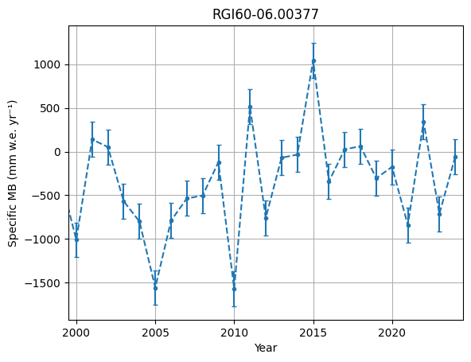
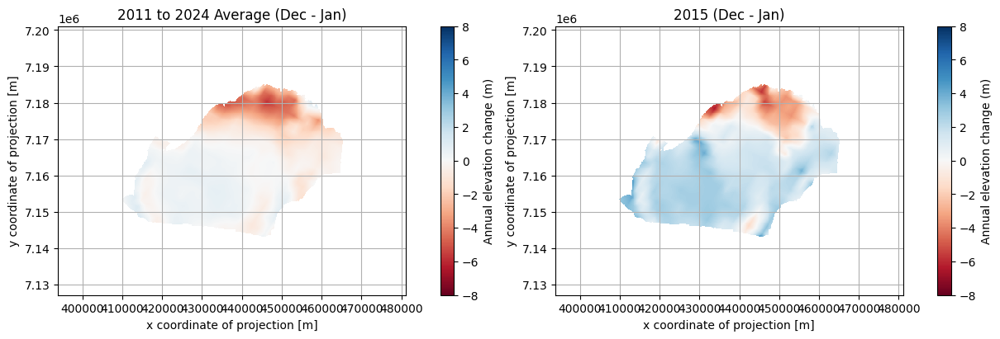
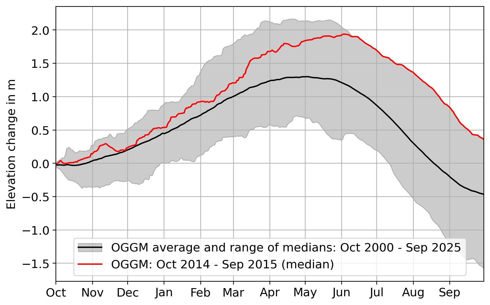
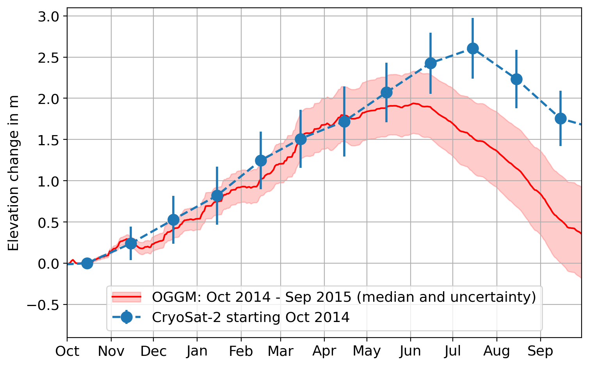
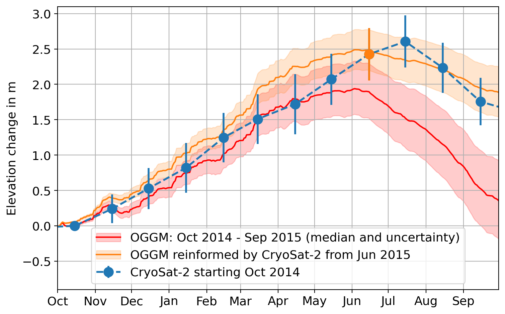

Informing hydropower outlook with DTC Glaciers: a prototype demonstration#
In this notebook, we show how the plots used in the Dea User Story “A glacier digital twin component to inform hydropower outlook” can be recreated.
The user story#
The user story focuses on the summer of 2015, when Iceland faced a major challenge for its hydropower system. During this period, glacier runoff was exceptionally low, leading to serious concerns about electricity production. We use the tools provided by DTC Glaciers to explore how a glacier digital twin prototype can help to better understand, anticipate, and manage such events in the future.
Hydropower and glaciers in Iceland#
More than 80% of Iceland’s electricity is generated from hydropower. These power plants have been historically developed and operated by Landsvirkjun, Iceland’s national power company, and they play a key role in the country’s low-carbon energy system.
The Kárahnjúkar Hydropower Plant is the largest hydropower plant in Iceland, with an annual production of around 4,600 GWh. It is supplied by a catchment area of 1,660 km², of which 72% is covered by glacier ice. Most of this ice belongs to Brúarjökull, an outlet glacier of Vatnajökull, the largest ice cap in Iceland.
The summer of 2015 was highly unusual#
Cold weather and persistent cloud cover led to a much later and weaker melt season than normal. As a result, glacier runoff was strongly reduced. According to Landsvirkjun, this was one of the worst melt seasons ever observed for their reservoirs (Source: International Water Power Magazine).
By August, river flow rates were still very low. This raised serious concerns about electricity supply and even led to discussions about emergency measures for the coming winter. In the end, heavy precipitation later in the summer refilled the reservoirs, and power rationing could be avoided.
Why this matters for the future#
While the summer of 2015 was exceptional, similar conditions can occur again. Years with positive glacier mass balance can reduce meltwater availability and create comparable challenges for hydropower production. Conversely, years with highly negative mass balance may lead to reservoir overflows and planned water releases.
In this notebook, we use the year 2015 as a “hindcast”. This means we use it as a real-world test case to evaluate how well future forecasts might perform under similar conditions.
Can an Earth-observation-informed Glacier Digital Twin help us anticipate such critical situations before they happen?
What observations tell us about 2015#
If required, install the DTCG API using the following command:
!pip install 'dtcg[jupyter] @ git+https://github.com/DTC-Glaciers/dtcg'
Run this command in a notebook cell.
# Imports
import numpy as np
import pandas as pd
import xarray as xr
import matplotlib.pyplot as plt
import matplotlib.image as mpimg
from matplotlib.legend_handler import HandlerTuple
from oggm.core import massbalance
from oggm import utils
import dtcg.integration.oggm_bindings as oggm_bindings
import dtcg.integration.calibration as calibration
from dtcg import DEFAULT_L2_DATACUBE_URL
from dtcg.datacube.geozarr import GeoZarrHandler
from dtcg.validation.validator import DatacubeValidator
from dtcg.validation.cryosat_validation import get_cryosat_data
from dtcg.api.external.call import StreamDatacube
We start by exploring the data available in the preprocessed DTC Glaciers L1 datacubes. The workflow used to create these L1 datacubes is described in more detail in the notebook Creating DTC Glaciers EO-Native Data Cubes (L1).
For this example, we stream the preprocessed datacubes for Brúarjökull and examine the available observations.
In particular, this section focuses on:
In-situ glacier mass balance measurements provided by the WGMS
Surface elevation change maps from CryoTEMPO-EOLIS, derived from CryoSat-2 observations
# Define the glacier we want to analyse and open the preprocessed DTC Glaciers data
rgi_id_ice = "RGI60-06.00377" # Brúarjökull
dtcg_oggm_ice = oggm_bindings.BindingsOggmModel(rgi_id=rgi_id_ice)
# streamer = StreamDatacube(server=DEFAULT_L2_DATACUBE_URL)
# Alternatively, we could use xarray's open_datatree function
def get_l2_data_tree(rgi_id):
return xr.open_datatree(
f"{DEFAULT_L2_DATACUBE_URL}{rgi_id}.zarr",
chunks={},
engine="zarr",
consolidated=True,
decode_cf=True,
)
data_tree_ice = get_l2_data_tree(rgi_id=rgi_id_ice)
l1_datacube_ice = data_tree_ice["L1"].ds
l1_datacube_ice
<xarray.DatasetView> Size: 464MB
Dimensions: (y: 370, x: 436, t: 177, t_wgms: 32)
Coordinates:
* y (y) float32 1kB 7.201e+06 ... 7....
* x (x) float32 2kB 3.94e+05 ... 4.8...
* t (t) datetime64[ns] 1kB 2011-01-1...
* t_wgms (t_wgms) int64 256B 1993 ... 2024
Data variables: (12/21)
consensus_ice_thickness (y, x) float32 645kB dask.array<chunksize=(370, 436), meta=np.ndarray>
eolis_elevation_change_sigma_timeseries (t) float64 1kB dask.array<chunksize=(177,), meta=np.ndarray>
eolis_elevation_change_timeseries (t) float64 1kB dask.array<chunksize=(177,), meta=np.ndarray>
eolis_gridded_elevation_change (t, y, x) float64 228MB dask.array<chunksize=(177, 60, 60), meta=np.ndarray>
eolis_gridded_elevation_change_sigma (t, y, x) float64 228MB dask.array<chunksize=(177, 60, 60), meta=np.ndarray>
glacier_ext (y, x) int8 161kB dask.array<chunksize=(370, 436), meta=np.ndarray>
... ...
spatial_ref int64 8B ...
topo (y, x) float32 645kB dask.array<chunksize=(370, 436), meta=np.ndarray>
topo_smoothed (y, x) float32 645kB dask.array<chunksize=(370, 436), meta=np.ndarray>
topo_valid_mask (y, x) int8 161kB dask.array<chunksize=(370, 436), meta=np.ndarray>
wgms_mb (t_wgms) float64 256B dask.array<chunksize=(32,), meta=np.ndarray>
wgms_mb_unc (t_wgms) float64 256B dask.array<chunksize=(32,), meta=np.ndarray>
Attributes:
Conventions: CF-1.12
comment: The DTC Glaciers project is developed under the Euro...
date_created: 2026-01-11T14:01:26.724140
RGI-ID: RGI60-06.00377
glacier_attributes: {'rgi_id': 'RGI60-06.00377', 'glims_id': 'G343733E64...
title: Datacube of glacier-domain variables.
summary: Resampled glacier-domain variables from multiple sou...In-situ mass balance observations from WGMS#
The figure below shows the WGMS observations from the last 25 years:
plt.errorbar(
x=l1_datacube_ice.t_wgms,
y=l1_datacube_ice.wgms_mb,
yerr=l1_datacube_ice.wgms_mb_unc,
fmt=".--",
capsize=2,
)
plt.grid("on")
plt.ylabel("Specific MB (mm w.e. yr⁻¹)")
plt.xlabel("Year")
plt.title(dtcg_oggm_ice.datacube_l1.attrs["RGI-ID"])
plt.xlim([1999.5, 2024.5])
plt.show()

From the plot above, we see that 2015 had the most positive glacier mass balance in the last 25 years.
# Calculate statistics
print(
"Mean annual mass balance 2000 to 2025: "
f"{l1_datacube_ice.wgms_mb.sel(t_wgms=slice(2000, 2025)).mean().values:.0f} mm w.e. yr⁻¹"
)
print(
" Annual mass balance 2015: "
f"{l1_datacube_ice.wgms_mb.sel(t_wgms=2015).mean().values:.0f} mm w.e. yr⁻¹"
)
Mean annual mass balance 2000 to 2025: -343 mm w.e. yr⁻¹
Annual mass balance 2015: 1044 mm w.e. yr⁻¹
The observed mass balance in 2015 was 1044 mm w.e. yr⁻¹, compared to a 25-year mean of −343 mm w.e. yr⁻¹. This large difference clearly shows how exceptional the year 2015 was.
CryoTEMPO-EOLIS elevation changes from CryoSat-2#
The exceptional nature of 2015 is also visible in the CryoTEMPO-EOLIS surface elevation change maps.
Below, we compare the annual glacier elevation change in 2015 with the multi-year average:

When comparing the 2015 map with the 14-year average, we see much more positive elevation change (shown in blue). This indicates that glacier mass gain was significantly higher in 2015 than in an average year.
In the Dea user story, additional maps of surface albedo are shown. These data are not yet included in the DTC Glaciers L1 datacubes. The albedo observations also show higher values in 2015 compared to an average year, which points to increased snow accumulation.
A high albedo means that more sunlight is reflected, which typically indicates the presence of snow rather than bare ice.
Out-of-the-box output from DTC Glaciers#
We now take a look at what DTC Glaciers tells us about 2015 using an out-of-the-box configuration. More detailed information on how this configuration was created can be found in the notebook Creating DTC Glaciers EO-DT-Enhanced Data Cubes (L2).
Under the hood, DTC Glaciers is based on the Open Global Glacier Model (OGGM). Here, out-of-the-box refers to a model setup in which OGGM is calibrated using CryoSat-2 data from 2011 to 2020.
The model output from this calibration is already included in the preprocessed DTC Glaciers datacubes, allowing us to inspect the results directly without running any additional computations:
# Define the name of the L2 datacube we want to analyse
L2_name = "L2_Daily_Cryosat_2011_2020"
plot_annual_elevation_change(
data_tree=data_tree_ice,
L2_name=L2_name,
annual_range=[2000, 2025],
special_year=2015,
)

This graph shows daily output from the standard OGGM glacier mass balance model, calibrated using multi-year averages of CryoSat-2 surface elevation change observations.
The black line represents the average hydrological year over the period 2000–2025. It shows snow accumulation until late May, followed by a short but intense melt season. The shaded area indicates the year-to-year variability, highlighting how different individual seasons can be.
The red line shows the modeled evolution during the 2014–2015 hydrological year. This year clearly stands out: summer melting did not begin until mid-June, and the year ended as the most positive mass balance year of the entire 25-year period.
Next, we compare the model output for 2015 with the glacier-integrated CryoSat-2 observations from the same year:
plot_annual_elevation_change(
data_tree=data_tree_ice,
L2_name=L2_name,
annual_range=None,
special_year=2015,
add_special_year_uncertainty=True,
add_observation=True,
ylim=[-0.9, 3.1],
)

We see that the model and the observations agree quite well until mid-May. However, from June onwards the model no longer follows the measurements. As the exceptional summer of 2015 unfolds, the standard out-of-the-box setup is not able to capture the observed evolution.
From the perspective of an operator in June: would the delayed onset of melt have been enough to trigger early action - and could the model have been trusted at that point?
Next, we revisit 2015, but this time we incorporate CryoSat-2 information as the season progresses. In practice, this means we use the mid-June CryoSat-2 observation to update (reinform) the DTC Glaciers model state.
Calibrate DTC Glaciers with CryoSat-2 observations from June 2015#
The tools used below to reinform DTC Glaciers are described in more detail in the notebook Creating DTC Glaciers EO-DT-Enhanced Data Cubes (L2).
In principle, we only need to define the reference period used for the calibration. In this example, the period runs from 1 October 2014 to 1 June 2015. Internally, DTC Glaciers automatically searches for the closest available CryoSat-2 observations to these dates.
We then run the DTC Glaciers calibration workflow and add the resulting model output to the existing data_tree for later analysis.
The calibration below takes around three minutes to complete. If you want to reduce computing time, you can set nr_samples to a smaller value. This reduces the ensemble size of the Monte Carlo simulation used for uncertainty propagation (explained in more detail in this notebook):
# Define a descriptive name for the updated DTC Glaciers configuration
L2_name_reinformed = "L2_Daily_Cryosat_2015_Jun"
# Initialise the calibrator, define the settings, and run the calibration
calibrator = calibration.CalibratorCryotempo(
datacube_l1=data_tree_ice["L1"].ds, gdir=dtcg_oggm_ice.gdir
)
calibrator.set_model_matrix(
name=L2_name_reinformed,
model=massbalance.DailyTIModel,
ref_mb_period="2014-10-01_2015-06-01",
source="CryoTEMPO-EOLIS",
extra_kwargs={},
)
l2_datacubes = calibrator.calibrate(
gdir=dtcg_oggm_ice.gdir,
# Show log messages during the workflow to monitor progress
show_log=True,
# 'nr_samples' defines the ensemble size for the Monte Carlo simulation.
# To reduce computing time, this can be set to 2**3 or 2**2.
mcs_sampling_settings={
"nr_samples": 2**4,
},
# Select the output data to generate; here we request all available outputs
datacube_types=["monthly", "annual_hydro", "daily_smb"],
)
# Add the new L2 datacube to the existing data_tree
datacube_handler = GeoZarrHandler(ds=data_tree_ice)
datacube_handler.add_datacube(
datacubes=l2_datacubes[L2_name_reinformed], datacube_name=L2_name_reinformed
)
L2_Daily_Cryosat_2015_Jun_2014-10-01_2015-06-01:
Starting Monte Carlo Simulation for 96 ensemble members.
Finished Monte Carlo Simulation: 96 ensemble members for output aggregation available.
Start generating datacubes
Start generation of monthly datacube
Finished generation of monthly datacube
Start generation of annual_hydro datacube
Finished generation of annual_hydro datacube
Start generation of daily_smb datacube
Finished generation of daily_smb datacube
Finished generating datacubes
0%| | 0/1 [00:00<?, ?it/s]
100%|██████████| 1/1 [03:04<00:00, 184.62s/it]
100%|██████████| 1/1 [03:04<00:00, 184.62s/it]
Reinformed vs. out-of-the-box DTC Glaciers output#
Below, we compare the reinformed DTC Glaciers output with the out-of-the-box results and the glacier-integrated CryoSat-2 observations:
plot_annual_elevation_change(
data_tree=data_tree_ice,
L2_name=L2_name,
L2_name_reinformed=L2_name_reinformed,
annual_range=None,
special_year=2015,
add_special_year_uncertainty=True,
add_observation=True,
add_observation_used_for_calibration="2015-06-01",
ylim=[-0.9, 3.1],
)

The red line shows the out-of-the-box model output, as seen in the previous plots.
The blue line represents CryoSat-2 elevation change observations. These observations confirm - and even strengthen - the signal of a delayed onset of the melt season. They provide new information that DTC Glaciers can use to update its representation of the year.
The orange line shows the DTC Glaciers output after re-calibration. In hindsight, this updated model output aligns much more closely with what actually occurred.
By combining Earth Observation data with glacier modelling, a decision-maker in mid-summer 2015 could have had a much stronger basis for anticipating the risks ahead.
Limitations and future work#
The plot above assumes perfect knowledge of weather conditions from the forecast date (June) through the end of the year. This is, of course, a strong and unrealistic assumption. In practice, seasonal forecasts of glacier mass balance would need to rely on seasonal forecasts or historical climatology. The aim here was to demonstrate that glaciological information can be used in near real time to update glacier states as they evolve, potentially improving seasonal forecasts. Future work should demonstrate this more quantitatively.
The current method for converting mass change to elevation change uses a simplified density assumption. A more robust approach based on physically based modelling should be a priority for future development.
The CryoSat-2 data shows an anomalous positive mass balance in July 2015, possibly due to radar signal penetration issues. This needs further investigation. Nevertheless, 2015 remains the most positive year in the CryoSat-2 time series, and the trend is consistent with the unfolding of that summer season.
DTC Glaciers is currently a prototype and cannot yet deliver operational forecasts. Further development and validation are needed before it can support real-time decision-making.
Stay in touch#
The project is currently in an early prototype phase. We welcome feedback, ideas, and collaboration from the community to help shape its future.
To learn more and get involved, visit our website: https://dtcglaciers.org